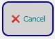

La tecla Reset restablece todos los parámetros de búsqueda.
La tecla OK va a la variable seleccionada en la Crosstable.
 La tecla Cancel cierra la ventana.

 La tecla OK va a la variable seleccionada en la Crosstable.
La tecla OK va a la variable seleccionada en la Crosstable.